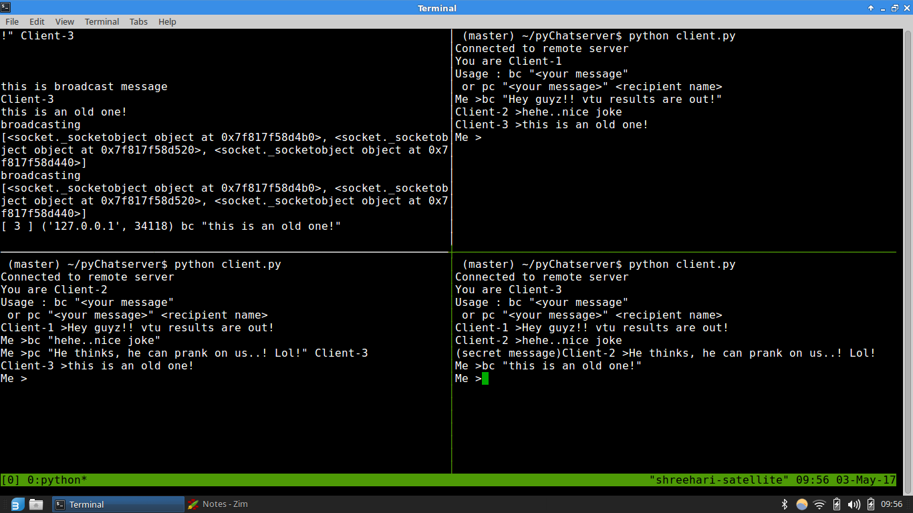

Why?
Sockets are powerful, they rule the inter-net. Each web application uses the sockets.All I wanted to know was how computers communicate using sockets. Then I picked this up! CheetahChat.
Technologies used
Python-Socket Programming
Have a look through it.

How does it work?
This is a simple text-based chat server. 5 clients can connect to to the server at a time and communicate. Clients have two options, broadcast message and private chat.
Project Log
- Designed the architecture of chat server.
- Used TCP/IP stream socket in non-blocking mode.
- Server uses threads for sending message to client.
- Each client has two threads running, one for sending data to server and one for recieving data from server.
- Broadcast, private chat feature was implemeted.